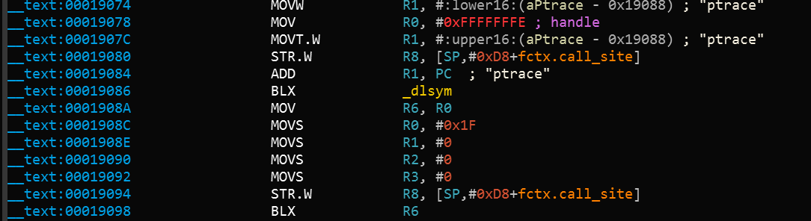
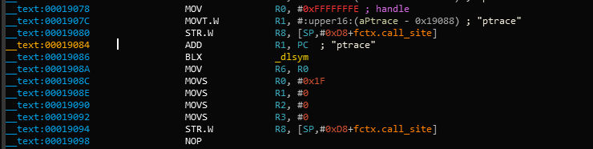

iOS Anti-Reversing Defenses¶
Overview¶
This chapter covers defense-in-depth measures recommended for apps that process, or give access to, sensitive data or functionality. Research shows that many App Store apps often include these measures.
These measures should be applied as needed, based on an assessment of the risks caused by unauthorized tampering with the app and/or reverse engineering of the code.
- Apps must never use these measures as a replacement for security controls, and are threfore expected to fulfil other baseline security measures such as the rest of the MASVS security controls.
- Apps should combine these measures cleverly instead of using them individually. The goal is to discourage reverse engineers from performing further analysis.
- Integrating some of the controls into your app might increase the complexity of your app and even have an impact on its performance.
General Disclaimer¶
The lack of any of these measures does not cause a vulnerability - instead, they are meant to increase the app's resilience against reverse engineering and specific client-side attacks.
None of these measures can assure a 100% effectiveness, as the reverse engineer will always have full access to the device and will therefore always win (given enough time and resources)!
For example, preventing debugging is virtually impossible. If the app is publicly available, it can be run on an untrusted device that is under full control of the attacker. A very determined attacker will eventually manage to bypass all the app's anti-debugging controls by patching the app binary or by dynamically modifying the app's behavior at runtime with tools such as Frida.
Jailbreak Detection¶
Jailbreak detection mechanisms are added to reverse engineering defense to make running the app on a jailbroken device more difficult. This blocks some of the tools and techniques reverse engineers like to use. Like most other types of defense, jailbreak detection is not very effective by itself, but scattering checks throughout the app's source code can improve the effectiveness of the overall anti-tampering scheme.
Common Jailbreak Detection Checks¶
Here we present three typical jailbreak detection techniques (more information in this blog post):
File-based Checks:
The app might be checking for files and directories typically associated with jailbreaks, such as:
/Applications/Cydia.app
/Applications/FakeCarrier.app
/Applications/Icy.app
/Applications/IntelliScreen.app
/Applications/MxTube.app
/Applications/RockApp.app
/Applications/SBSettings.app
/Applications/WinterBoard.app
/Applications/blackra1n.app
/Library/MobileSubstrate/DynamicLibraries/LiveClock.plist
/Library/MobileSubstrate/DynamicLibraries/Veency.plist
/Library/MobileSubstrate/MobileSubstrate.dylib
/System/Library/LaunchDaemons/com.ikey.bbot.plist
/System/Library/LaunchDaemons/com.saurik.Cydia.Startup.plist
/bin/bash
/bin/sh
/etc/apt
/etc/ssh/sshd_config
/private/var/lib/apt
/private/var/lib/cydia
/private/var/mobile/Library/SBSettings/Themes
/private/var/stash
/private/var/tmp/cydia.log
/var/tmp/cydia.log
/usr/bin/sshd
/usr/libexec/sftp-server
/usr/libexec/ssh-keysign
/usr/sbin/sshd
/var/cache/apt
/var/lib/apt
/var/lib/cydia
/usr/sbin/frida-server
/usr/bin/cycript
/usr/local/bin/cycript
/usr/lib/libcycript.dylib
/var/log/syslog
Checking File Permissions:
The app might be trying to write to a location that's outside the application's sandbox. For instance, it may attempt to create a file in, for example, the /private directory. If the file is created successfully, the app can assume that the device has been jailbroken.
do {
let pathToFileInRestrictedDirectory = "/private/jailbreak.txt"
try "This is a test.".write(toFile: pathToFileInRestrictedDirectory, atomically: true, encoding: String.Encoding.utf8)
try FileManager.default.removeItem(atPath: pathToFileInRestrictedDirectory)
// Device is jailbroken
} catch {
// Device is not jailbroken
}
Checking Protocol Handlers:
The app might be attempting to call well-known protocol handlers such as cydia:// (available by default after installing Cydia).
if let url = URL(string: "cydia://package/com.example.package"), UIApplication.shared.canOpenURL(url) {
// Device is jailbroken
}
Automated Jailbreak Detection Bypass¶
The quickest way to bypass common Jailbreak detection mechanisms is objection. You can find the implementation of the jailbreak bypass in the jailbreak.ts script.
Manual Jailbreak Detection Bypass¶
If the automated bypasses aren't effective you need to get your hands dirty and reverse engineer the app binaries until you find the pieces of code responsible for the detection and either patch them statically or apply runtime hooks to disable them.
Step 1: Reverse Engineering:
When you need to reverse engineer a binary looking for jailbreak detection, the most obvious way is to search for known strings, such as "jail" or "jailbreak". Note that this won't be always effective, especially when resilience measures are in place or simply when the the developer has avoided such obvious terms.
Example: Download the Damn Vulnerable iOS application (DVIA-v2), unzip it, load the main binary into radare2 and wait for the analysis to complete.
r2 -A ./DVIA-v2-swift/Payload/DVIA-v2.app/DVIA-v2
Now you can list the binary's symbols using the is command and apply a case-insensitive grep (~+) for the string "jail".
[0x1001a9790]> is~+jail
...
2230 0x001949a8 0x1001949a8 GLOBAL FUNC 0 DVIA_v2.JailbreakDetectionViewController.isJailbroken.allocator__Bool
7792 0x0016d2d8 0x10016d2d8 LOCAL FUNC 0 +[JailbreakDetection isJailbroken]
...
As you can see, there's an instance method with the signature -[JailbreakDetectionVC isJailbroken].
Step 2: Dynamic Hooks:
Now you can use Frida to bypass jailbreak detection by performing the so-called early instrumentation, that is, by replacing function implementation right at startup.
Use frida-trace on your host computer:
frida-trace -U -f /Applications/DamnVulnerableIOSApp.app/DamnVulnerableIOSApp -m "-[JailbreakDetectionVC isJailbroken]"
This will start the app, trace calls to -[JailbreakDetectionVC isJailbroken], and create a JavaScript hook for each matching element.
Open ./__handlers__/__JailbreakDetectionVC_isJailbroken_.js with your favouritte editor and edit the onLeave callback function. You can simply replace the return value using retval.replace() to always return 0:
onLeave: function (log, retval, state) {
console.log("Function [JailbreakDetectionVC isJailbroken] originally returned:"+ retval);
retval.replace(0);
console.log("Changing the return value to:"+retval);
}
This will provide the following output:
$ frida-trace -U -f /Applications/DamnVulnerableIOSApp.app/DamnVulnerableIOSApp -m "-[JailbreakDetectionVC isJailbroken]:"
Instrumenting functions... `...
-[JailbreakDetectionVC isJailbroken]: Loaded handler at "./__handlers__/__JailbreakDetectionVC_isJailbroken_.js"
Started tracing 1 function. Press Ctrl+C to stop.
Function [JailbreakDetectionVC isJailbroken] originally returned:0x1
Changing the return value to:0x0
Anti-Debugging Detection¶
Exploring applications using a debugger is a very powerful technique during reversing. You can not only track variables containing sensitive data and modify the control flow of the application, but also read and modify memory and registers.
There are several anti-debugging techniques applicable to iOS which can be categorized as preventive or as reactive. When properly distributed throughout the app, these techniques act as a supportive measure to increase the overall resilience.
- Preventive techniques act as a first line of defense to impede the debugger from attaching to the application at all.
- Reactive techniques allow the application to detect the presence of a debugger and have a chance to diverge from normal behavior.
Using ptrace¶
As seen in chapter "Tampering and Reverse Engineering on iOS", the iOS XNU kernel implements a ptrace system call that's lacking most of the functionality required to properly debug a process (e.g. it allows attaching/stepping but not read/write of memory and registers).
Nevertheless, the iOS implementation of the ptrace syscall contains a nonstandard and very useful feature: preventing the debugging of processes. This feature is implemented as the PT_DENY_ATTACH request, as described in the official BSD System Calls Manual. In simple words, it ensures that no other debugger can attach to the calling process; if a debugger attempts to attach, the process will terminate. Using PT_DENY_ATTACH is a fairly well-known anti-debugging technique, so you may encounter it often during iOS pentests.
Before diving into the details, it is important to know that
ptraceis not part of the public iOS API. Non-public APIs are prohibited, and the App Store may reject apps that include them. Because of this,ptraceis not directly called in the code; it's called when aptracefunction pointer is obtained viadlsym.
The following is an example implementation of the above logic:
#import <dlfcn.h>
#import <sys/types.h>
#import <stdio.h>
typedef int (*ptrace_ptr_t)(int _request, pid_t _pid, caddr_t _addr, int _data);
void anti_debug() {
ptrace_ptr_t ptrace_ptr = (ptrace_ptr_t)dlsym(RTLD_SELF, "ptrace");
ptrace_ptr(31, 0, 0, 0); // PTRACE_DENY_ATTACH = 31
}
Bypass: To demonstrate how to bypass this technique we'll use an example of a disassembled binary that implements this approach:

Let's break down what's happening in the binary. dlsym is called with ptrace as the second argument (register R1). The return value in register R0 is moved to register R6 at offset 0x1908A. At offset 0x19098, the pointer value in register R6 is called using the BLX R6 instruction. To disable the ptrace call, we need to replace the instruction BLX R6 (0xB0 0x47 in Little Endian) with the NOP (0x00 0xBF in Little Endian) instruction. After patching, the code will be similar to the following:

Armconverter.com is a handy tool for conversion between bytecode and instruction mnemonics.
Bypasses for other ptrace-based anti-debugging techniques can be found in "Defeating Anti-Debug Techniques: macOS ptrace variants" by Alexander O'Mara.
Using sysctl¶
Another approach to detecting a debugger that's attached to the calling process involves sysctl. According to the Apple documentation, it allows processes to set system information (if having the appropriate privileges) or simply to retrieve system information (such as whether or not the process is being debugged). However, note that just the fact that an app uses sysctl might be an indicator of anti-debugging controls, though this won't be always be the case.
The Apple Documentation Archive includes an example which checks the info.kp_proc.p_flag flag returned by the call to sysctl with the appropriate parameters. According to Apple, you shouldn't use this code unless it's for the debug build of your program.
Bypass: One way to bypass this check is by patching the binary. When the code above is compiled, the disassembled version of the second half of the code is similar to the following:

After the instruction at offset 0xC13C, MOVNE R0, #1 is patched and changed to MOVNE R0, #0 (0x00 0x20 in in bytecode), the patched code is similar to the following:

You can also bypass a sysctl check by using the debugger itself and setting a breakpoint at the call to sysctl. This approach is demonstrated in iOS Anti-Debugging Protections #2.
Using getppid¶
Applications on iOS can detect if they have been started by a debugger by checking their parent PID. Normally, an application is started by the launchd process, which is the first process running in the user mode and has PID=1. However, if a debugger starts an application, we can observe that getppid returns a PID different than 1. This detection technique can be implemented in native code (via syscalls), using Objective-C or Swift as shown here:
func AmIBeingDebugged() -> Bool {
return getppid() != 1
}
Bypass: Similarly to the other techniques, this has also a trivial bypass (e.g. by patching the binary or by using Frida hooks).
File Integrity Checks¶
There are two common approaches to check file integrity: using application source code integrity checks and using file storage integrity checks.
Application Source Code Integrity Checks¶
In the "Tampering and Reverse Engineering on iOS" chapter, we discussed the iOS IPA application signature check. We also saw that determined reverse engineers can bypass this check by re-packaging and re-signing an app using a developer or enterprise certificate. One way to make this harder is to add a custom check that determines whether the signatures still match at runtime.
Apple takes care of integrity checks with DRM. However, additional controls (such as in the example below) are possible. The mach_header is parsed to calculate the start of the instruction data, which is used to generate the signature. Next, the signature is compared to the given signature. Make sure that the generated signature is stored or coded somewhere else.
int xyz(char *dst) {
const struct mach_header * header;
Dl_info dlinfo;
if (dladdr(xyz, &dlinfo) == 0 || dlinfo.dli_fbase == NULL) {
NSLog(@" Error: Could not resolve symbol xyz");
[NSThread exit];
}
while(1) {
header = dlinfo.dli_fbase; // Pointer on the Mach-O header
struct load_command * cmd = (struct load_command *)(header + 1); // First load command
// Now iterate through load command
//to find __text section of __TEXT segment
for (uint32_t i = 0; cmd != NULL && i < header->ncmds; i++) {
if (cmd->cmd == LC_SEGMENT) {
// __TEXT load command is a LC_SEGMENT load command
struct segment_command * segment = (struct segment_command *)cmd;
if (!strcmp(segment->segname, "__TEXT")) {
// Stop on __TEXT segment load command and go through sections
// to find __text section
struct section * section = (struct section *)(segment + 1);
for (uint32_t j = 0; section != NULL && j < segment->nsects; j++) {
if (!strcmp(section->sectname, "__text"))
break; //Stop on __text section load command
section = (struct section *)(section + 1);
}
// Get here the __text section address, the __text section size
// and the virtual memory address so we can calculate
// a pointer on the __text section
uint32_t * textSectionAddr = (uint32_t *)section->addr;
uint32_t textSectionSize = section->size;
uint32_t * vmaddr = segment->vmaddr;
char * textSectionPtr = (char *)((int)header + (int)textSectionAddr - (int)vmaddr);
// Calculate the signature of the data,
// store the result in a string
// and compare to the original one
unsigned char digest[CC_MD5_DIGEST_LENGTH];
CC_MD5(textSectionPtr, textSectionSize, digest); // calculate the signature
for (int i = 0; i < sizeof(digest); i++) // fill signature
sprintf(dst + (2 * i), "%02x", digest[i]);
// return strcmp(originalSignature, signature) == 0; // verify signatures match
return 0;
}
}
cmd = (struct load_command *)((uint8_t *)cmd + cmd->cmdsize);
}
}
}
Bypass:
- Patch the anti-debugging functionality and disable the unwanted behavior by overwriting the associated code with NOP instructions.
- Patch any stored hash that's used to evaluate the integrity of the code.
- Use Frida to hook file system APIs and return a handle to the original file instead of the modified file.
File Storage Integrity Checks¶
Apps might choose to ensure the integrity of the application storage itself, by creating an HMAC or signature over either a given key-value pair or a file stored on the device, e.g. in the Keychain, UserDefaults/NSUserDefaults, or any database.
For example, an app might contain the following code to generate an HMAC with CommonCrypto:
// Allocate a buffer to hold the digest and perform the digest.
NSMutableData* actualData = [getData];
//get the key from the keychain
NSData* key = [getKey];
NSMutableData* digestBuffer = [NSMutableData dataWithLength:CC_SHA256_DIGEST_LENGTH];
CCHmac(kCCHmacAlgSHA256, [actualData bytes], (CC_LONG)[key length], [actualData bytes], (CC_LONG)[actualData length], [digestBuffer mutableBytes]);
[actualData appendData: digestBuffer];
This script performs the following steps:
- Get the data as
NSMutableData. - Get the data key (typically from the Keychain).
- Calculate the hash value.
- Append the hash value to the actual data.
- Store the results of step 4.
After that, it might be verifying the HMACs by doing the following:
NSData* hmac = [data subdataWithRange:NSMakeRange(data.length - CC_SHA256_DIGEST_LENGTH, CC_SHA256_DIGEST_LENGTH)];
NSData* actualData = [data subdataWithRange:NSMakeRange(0, (data.length - hmac.length))];
NSMutableData* digestBuffer = [NSMutableData dataWithLength:CC_SHA256_DIGEST_LENGTH];
CCHmac(kCCHmacAlgSHA256, [actualData bytes], (CC_LONG)[key length], [actualData bytes], (CC_LONG)[actualData length], [digestBuffer mutableBytes]);
return [hmac isEqual: digestBuffer];
- Extracts the message and the hmacbytes as separate
NSData. - Repeats steps 1-3 of the procedure for generating an HMAC on the
NSData. - Compares the extracted HMAC bytes to the result of step 1.
Note: if the app also encrypts files, make sure that it encrypts and then calculates the HMAC as described in Authenticated Encryption.
Bypass:
- Retrieve the data from the device, as described in the "Device Binding" section.
- Alter the retrieved data and return it to storage.
Reverse Engineering Tools Detection¶
The presence of tools, frameworks and apps commonly used by reverse engineers may indicate an attempt to reverse engineer the app. Some of these tools can only run on a jailbroken device, while others force the app into debugging mode or depend on starting a background service on the mobile phone. Therefore, there are different ways that an app may implement to detect a reverse engineering attack and react to it, e.g. by terminating itself.
You can detect popular reverse engineering tools that have been installed in an unmodified form by looking for associated application packages, files, processes, or other tool-specific modifications and artifacts. In the following examples, we'll discuss different ways to detect the Frida instrumentation framework, which is used extensively in this guide and also in the real world. Other tools, such as Cydia Substrate or Cycript, can be detected similarly. Note that injection, hooking and DBI (Dynamic Binary Instrumentation) tools can often be detected implicitly, through runtime integrity checks, which are discussed below.
Bypass:
The following steps should guide you when bypassing detection of reverse engineering tools:
- Patch the anti reverse engineering functionality. Disable the unwanted behavior by patching the binary through usage of radare2/Cutter or Ghidra.
- Use Frida or Cydia Substrate to hook file system APIs on the Objective-C/Swift or native layers. Return a handle to the original file, not the modified file.
Refer to the chapter "Tampering and Reverse Engineering on iOS" for examples of patching and code injection.
Frida Detection¶
Frida runs under the name of frida-server in its default configuration (injected mode) on a jailbroken device. When you explicitly attach to a target app (e.g. via frida-trace or the Frida CLI), Frida injects a frida-agent into the memory of the app. Therefore, you may expect to find it there after attaching to the app (and not before). On Android, verifying this is pretty straightforward as you can simply grep for the string "frida" in the memory maps of the process ID in the proc directory (/proc/<pid>/maps).
However, on iOS the proc directory is not available, but you can list the loaded dynamic libraries in an app with the function _dyld_image_count.
Frida may also run in the so-called embedded mode, which also works for non-jailbroken devices. It consists of embedding a frida-gadget into the IPA and forcing the app to load it as one of its native libraries.
The application's static content, including its ARM-compiled binary and its external libraries, is stored inside the <Application>.app directory. If you inspect the content of the /var/containers/Bundle/Application/<UUID>/<Application>.app directory, you'll find the embedded frida-gadget as FridaGadget.dylib.
iPhone:/var/containers/Bundle/Application/AC5DC1FD-3420-42F3-8CB5-E9D77C4B287A/SwiftSecurity.app/Frameworks root# ls -alh
total 87M
drwxr-xr-x 10 _installd _installd 320 Nov 19 06:08 ./
drwxr-xr-x 11 _installd _installd 352 Nov 19 06:08 ../
-rw-r--r-- 1 _installd _installd 70M Nov 16 06:37 FridaGadget.dylib
-rw-r--r-- 1 _installd _installd 3.8M Nov 16 06:37 libswiftCore.dylib
-rw-r--r-- 1 _installd _installd 71K Nov 16 06:37 libswiftCoreFoundation.dylib
-rw-r--r-- 1 _installd _installd 136K Nov 16 06:38 libswiftCoreGraphics.dylib
-rw-r--r-- 1 _installd _installd 99K Nov 16 06:37 libswiftDarwin.dylib
-rw-r--r-- 1 _installd _installd 189K Nov 16 06:37 libswiftDispatch.dylib
-rw-r--r-- 1 _installd _installd 1.9M Nov 16 06:38 libswiftFoundation.dylib
-rw-r--r-- 1 _installd _installd 76K Nov 16 06:37 libswiftObjectiveC.dylib
Looking at these traces that Frida leaves behind, you might already imagine that detecting Frida would be a trivial task. And while it is trivial to detect these libraries, it is equally trivial to bypass such a detection. Detection of tools is a cat and mouse game and things can get much more complicated. The following table shortly presents a set of some typical Frida detection methods and a short discussion on their effectiveness.
Some of the following detection methods are implemented in the iOS Security Suite.
| Method | Description | Discussion |
|---|---|---|
| Check The Environment For Related Artifacts | Artifacts can be packaged files, binaries, libraries, processes, and temporary files. For Frida, this could be the frida-server running in the target (jailbroken) system (the daemon responsible for exposing Frida over TCP) or the frida libraries loaded by the app. | Inspecting running services is not possible for an iOS app on a non-jailbroken device. The Swift method CommandLine is not available on iOS to query for information about running processes, but there are unofficial ways, such as by using NSTask. Nevertheless when using this method, the app will be rejected during the App Store review process. There is no other public API available to query for running processes or execute system commands within an iOS App. Even if it would be possible, bypassing this would be as easy as just renaming the corresponding Frida artifact (frida-server/frida-gadget/frida-agent). Another way to detect Frida, would be to walk through the list of loaded libraries and check for suspicious ones (e.g. those including "frida" in their names), which can be done by using _dyld_get_image_name. |
| Checking For Open TCP Ports | The frida-server process binds to TCP port 27042 by default. Testing whether this port is open is another method of detecting the daemon. | This method detects frida-server in its default mode, but the listening port can be changed via a command line argument, so bypassing this is very trivial. |
| Checking For Ports Responding To D-Bus Auth | frida-server uses the D-Bus protocol to communicate, so you can expect it to respond to D-Bus AUTH. Send a D-Bus AUTH message to every open port and check for an answer, hoping that frida-server will reveal itself. |
This is a fairly robust method of detecting frida-server, but Frida offers alternative modes of operation that don't require frida-server. |
Please remember that this table is far from exhaustive. For example, two other possible detection mechanisms are:
- named pipes (used by frida-server for external communication), or
- detecting trampolines (see "Prevent bypassing of SSL certificate pinning in iOS applications" for further explanation and sample code for detection of trampolines in an iOS app)
Both would help to detect Substrate or Frida's Interceptor but, for example, won't be effective against Frida's Stalker. Remember that the success of each of these detection methods will depend on whether you're using a jailbroken device, the specific version of the jailbreak and method and/or the version of the tool itself. At the end, this is part of the cat and mouse game of protecting data being processed on an uncontrolled environment (the end user's device).
Emulator Detection¶
The goal of emulator detection is to increase the difficulty of running the app on an emulated device. This forces the reverse engineer to defeat the emulator checks or utilize the physical device, thereby barring the access required for large-scale device analysis.
As discussed in the section Testing on the iOS Simulator in the basic security testing chapter, the only available simulator is the one that ships with Xcode. Simulator binaries are compiled to x86 code instead of ARM code and apps compiled for a real device (ARM architecture) don't run in the simulator, hence simulation protection was not so much a concern regarding iOS apps in contrast to Android with a wide range of emulation choices available.
However, since its release, Corellium (commercial tool) has enabled real emulation, setting itself apart from the iOS simulator. In addition to that, being a SaaS solution, Corellium enables large-scale device analysis with the limiting factor just being available funds.
With Apple Silicon (ARM) hardware widely available, traditional checks for the presence of x86 / x64 architecture might not suffice. One potential detection strategy is to identify features and limitations available for commonly used emulation solutions. For instance, Corellium doesn't support iCloud, cellular services, camera, NFC, Bluetooth, App Store access or GPU hardware emulation (Metal). Therefore, smartly combining checks involving any of these features could be an indicator for the presence of an emulated environment.
Pairing these results with the ones from 3rd party frameworks such as iOS Security Suite, Trusteer or a no-code solution such as Appdome (commercial solution) will provide a good line of defense against attacks utilizing emulators.
Obfuscation¶
The chapter "Mobile App Tampering and Reverse Engineering" introduces several well-known obfuscation techniques that can be used in mobile apps in general.
Name Obfuscation¶
The standard compiler generates binary symbols based on class and function names from the source code. Therefore, if no obfuscation was applied, symbol names remain meaningful and can be easily read straight from the app binary. For instance, a function which detects a jailbreak can be located by searching for relevant keywords (e.g. "jailbreak"). The listing below shows the disassembled function JailbreakDetectionViewController.jailbreakTest4Tapped from the Damn Vulnerable iOS App (DVIA-v2).
__T07DVIA_v232JailbreakDetectionViewControllerC20jailbreakTest4TappedyypF:
stp x22, x21, [sp, #-0x30]!
mov rbp, rsp
After the obfuscation we can observe that the symbols name is no longer meaningful as shown on the listing below.
__T07DVIA_v232zNNtWKQptikYUBNBgfFVMjSkvRdhhnbyyFySbyypF:
stp x22, x21, [sp, #-0x30]!
mov rbp, rsp
Nevertheless, this only applies to the names of functions, classes and fields. The actual code remains unmodified, so an attacker can still read the disassembled version of the function and try to understand its purpose (e.g. to retrieve the logic of a security algorithm).
Instruction Substitution¶
This technique replaces standard binary operators like addition or subtraction with more complex representations. For example an addition x = a + b can be represented as x = -(-a) - (-b). However, using the same replacement representation could be easily reversed, so it is recommended to add multiple substitution techniques for a single case and introduce a random factor. This technique is vulnerable to deobfuscation, but depending on the complexity and depth of the substitutions, applying it can still be time consuming.
Control Flow Flattening¶
Control flow flattening replaces original code with a more complex representation. The transformation breaks the body of a function into basic blocks and puts them all inside a single infinite loop with a switch statement that controls the program flow. This makes the program flow significantly harder to follow because it removes the natural conditional constructs that usually make the code easier to read.

The image shows how control flow flattening alters code (see "Obfuscating C++ programs via control flow flattening")
Dead Code Injection¶
This technique makes the program's control flow more complex by injecting dead code into the program. Dead code is a stub of code that doesnt affect the original programs behaviour but increases the overhead for the reverse engineering process.
String Encryption¶
Applications are often compiled with hardcoded keys, licences, tokens and endpoint URLs. By default, all of them are stored in plaintext in the data section of an applications binary. This technique encrypts these values and injects stubs of code into the program that will decrypt that data before it is used by the program.
Recommended Tools¶
- SwiftShield can be used to perform name obfuscation. It reads the source code of the Xcode project and replaces all names of classes, methods and fields with random values before the compiler is used.
- obfuscator-llvm operates on the Intermediate Representation (IR) instead of the source code. It can be used for symbol obfuscation, string encryption and control flow flattening. Since it's based on IR, it can hide out significantly more information about the application as compared to SwiftShield.
Learn more about iOS obfuscation techniques here.
Device Binding¶
The purpose of device binding is to impede an attacker who tries to copy an app and its state from device A to device B and continue the execution of the app on device B. After device A has been determined trusted, it may have more privileges than device B. This situation shouldn't change when an app is copied from device A to device B.
Since iOS 7.0, hardware identifiers (such as MAC addresses) are off-limits but there are other methods for implementing device binding in iOS:
identifierForVendor: You can use[[UIDevice currentDevice] identifierForVendor](in Objective-C),UIDevice.current.identifierForVendor?.uuidString(in Swift3), orUIDevice.currentDevice().identifierForVendor?.UUIDString(in Swift2). The value ofidentifierForVendormay not be the same if you reinstall the app after other apps from the same vendor are installed and it may change when you update your app bundle's name. Therefore it is best to combine it with something in the Keychain.- Using the Keychain: You can store something in the Keychain to identify the application's instance. To make sure that this data is not backed up, use
kSecAttrAccessibleWhenPasscodeSetThisDeviceOnly(if you want to secure the data and properly enforce a passcode or Touch ID requirement),kSecAttrAccessibleAfterFirstUnlockThisDeviceOnly, orkSecAttrAccessibleWhenUnlockedThisDeviceOnly. - Using Google Instance ID: see the implementation for iOS here.
Any scheme based on these methods will be more secure the moment a passcode and/or Touch ID is enabled, the materials stored in the Keychain or filesystem are protected with protection classes (such as kSecAttrAccessibleAfterFirstUnlockThisDeviceOnly and kSecAttrAccessibleWhenUnlockedThisDeviceOnly), and the SecAccessControlCreateFlags is set either with kSecAccessControlDevicePasscode (for passcodes), kSecAccessControlUserPresence (passcode, Face ID or Touch ID), kSecAccessControlBiometryAny (Face ID or Touch ID) or kSecAccessControlBiometryCurrentSet (Face ID / Touch ID: but current enrolled biometrics only).
Testing Jailbreak Detection (MSTG-RESILIENCE-1)¶
To test for jailbreak detection install the app on a jailbroken device.
Launch the app and see what happens:
If it implements jailbreak detection, you might notice one of the following things:
- The app crashes and closes immediately, without any notification.
- A pop-up window indicates that the app won't run on a jailbroken device.
Note that crashes might be an indicator of jailbreak detection but the app may be crashing for any other reasons, e.g. it may have a bug. We recommend to test the app on non-jailbroken device first, especially when you're testing preproduction versions.
Launch the app and try to bypass Jailbreak Detection using an automated tool:
If it implements jailbreak detection, you might be able to see indicators of that in the output of the tool. See section "Automated Jailbreak Detection Bypass".
Reverse Engineer the app:
The app might be using techniques that are not implemented in the automated tools that you've used. If that's the case you must reverse engineer the app to find proofs. See section "Manual Jailbreak Detection Bypass".
Testing Anti-Debugging Detection (MSTG-RESILIENCE-2)¶
In order to test for anti-debugging detection you can try to attach a debugger to the app and see what happens.
The app should respond in some way. For example by:
- Alerting the user and asking for accepting liability.
- Preventing execution by gracefully terminating.
- Securely wiping any sensitive data stored on the device.
- Reporting to a backend server, e.g, for fraud detection.
Try to hook or reverse engineer the app using the methods from section "Anti-Debugging Detection".
Next, work on bypassing the detection and answer the following questions:
- Can the mechanisms be bypassed trivially (e.g., by hooking a single API function)?
- How difficult is identifying the detection code via static and dynamic analysis?
- Did you need to write custom code to disable the defenses? How much time did you need?
- What is your assessment of the difficulty of bypassing the mechanisms?
Testing File Integrity Checks (MSTG-RESILIENCE-3 and MSTG-RESILIENCE-11)¶
Application Source Code Integrity Checks:
Run the app on the device in an unmodified state and make sure that everything works. Then apply patches to the executable using optool, re-sign the app as described in the chapter "iOS Tampering and Reverse Engineering", and run it.
The app should respond in some way. For example by:
- Alerting the user and asking for accepting liability.
- Preventing execution by gracefully terminating.
- Securely wiping any sensitive data stored on the device.
- Reporting to a backend server, e.g, for fraud detection.
Work on bypassing the defenses and answer the following questions:
- Can the mechanisms be bypassed trivially (e.g., by hooking a single API function)?
- How difficult is identifying the detection code via static and dynamic analysis?
- Did you need to write custom code to disable the defenses? How much time did you need?
- What is your assessment of the difficulty of bypassing the mechanisms?
File Storage Integrity Checks:
Go to the app data directories as indicated in section "Accessing App Data Directories" and modify some files.
Next, work on bypassing the defenses and answer the following questions:
- Can the mechanisms be bypassed trivially (e.g., by changing the contents of a file or a key-value pair)?
- How difficult is obtaining the HMAC key or the asymmetric private key?
- Did you need to write custom code to disable the defenses? How much time did you need?
- What is your assessment of the difficulty of bypassing the mechanisms?
Testing Reverse Engineering Tools Detection (MSTG-RESILIENCE-4)¶
Launch the app with various reverse engineering tools and frameworks installed on your test device, such as Frida, Cydia Substrate, Cycript or SSL Kill Switch.
The app should respond in some way to the presence of those tools. For example by:
- Alerting the user and asking for accepting liability.
- Preventing execution by gracefully terminating.
- Securely wiping any sensitive data stored on the device.
- Reporting to a backend server, e.g, for fraud detection.
Next, work on bypassing the detection of the reverse engineering tools and answer the following questions:
- Can the mechanisms be bypassed trivially (e.g., by hooking a single API function)?
- How difficult is identifying the detection code via static and dynamic analysis?
- Did you need to write custom code to disable the defenses? How much time did you need?
- What is your assessment of the difficulty of bypassing the mechanisms?
Testing Emulator Detection (MSTG-RESILIENCE-5)¶
In order to test for emulator detection you can try to run the app on different emulators as indicated in section "Emulator Detection" and see what happens.
The app should respond in some way. For example by:
- Alerting the user and asking for accepting liability.
- Preventing execution by gracefully terminating.
- Reporting to a backend server, e.g, for fraud detection.
You can also reverse engineer the app using ideas for strings and methods from section "Emulator Detection".
Next, work on bypassing this detection and answer the following questions:
- Can the mechanisms be bypassed trivially (e.g., by hooking a single API function)?
- How difficult is identifying the detection code via static and dynamic analysis?
- Did you need to write custom code to disable the defenses? How much time did you need?
- What is your assessment of the difficulty of bypassing the mechanisms?
Testing Obfuscation (MSTG-RESILIENCE-9)¶
Attempt to disassemble the Mach-O in the IPA and any included library files in the "Frameworks" directory (.dylib or .framework files), and perform static analysis. At the very least, the app's core functionality (i.e., the functionality meant to be obfuscated) shouldn't be easily discerned. Verify that:
- meaningful identifiers, such as class names, method names, and variable names, have been discarded.
- string resources and strings in binaries are encrypted.
- code and data related to the protected functionality is encrypted, packed, or otherwise concealed.
For a more detailed assessment, you need a detailed understanding of the relevant threats and the obfuscation methods used.
Testing Device Binding (MSTG-RESILIENCE-10)¶
Static Analysis¶
To test for device binding you can look for:
- MAC addresses: there are several ways to find the MAC address. When you use
CTL_NET(a network subsystem) orNET_RT_IFLIST(getting the configured interfaces) or when the mac-address gets formatted, you'll often see formatting code for printing, such as"%x:%x:%x:%x:%x:%x". - UDID usage:
[[[UIDevice currentDevice] identifierForVendor] UUIDString];andUIDevice.current.identifierForVendor?.uuidStringin Swift3. - Any Keychain- or filesystem-based binding, which isn't protected by
SecAccessControlCreateFlagsor and doesn't use protection classes, such askSecAttrAccessibleAlwaysandkSecAttrAccessibleAlwaysThisDeviceOnly.
Dynamic Analysis¶
There are several ways to test the application binding.
Using A Simulator:
Take the following steps when you want to verify app-binding in a simulator:
- Run the application on a simulator.
- Make sure you can raise the trust in the application instance (e.g., authenticate in the app).
- Retrieve the data from the Simulator:
- Because simulators use UUIDs to identify themselves, you can make locating the storage easier by creating a debug point and executing
po NSHomeDirectory()on that point, which will reveal the location of the simulator's stored contents. You can also executefind ~/Library/Developer/CoreSimulator/Devices/ | grep <appname>for the suspected plist file. - Go to the directory indicated by the given command's output.
- Copy all three found folders (Documents, Library, tmp).
- Copy the contents of the Keychain. Since iOS 8, this has been in
~/Library/Developer/CoreSimulator/Devices/<Simulator Device ID>/data/Library/Keychains.
- Because simulators use UUIDs to identify themselves, you can make locating the storage easier by creating a debug point and executing
- Start the application on another simulator and find its data location as described in step 3.
- Stop the application on the second simulator. Overwrite the existing data with the data copied in step 3.
- Can you continue in an authenticated state? If so, then binding may not be working properly.
We are saying that the binding "may" not be working because not everything is unique in simulators.
Using Two Jailbroken Devices:
Take the following steps when you want to verify app-binding with two jailbroken devices:
- Run the app on your jailbroken device.
- Make sure you can raise the trust in the application instance (e.g., authenticate in the app).
- Retrieve the data from the jailbroken device:
- You can SSH into your device and extract the data (as with a simulator, either use debugging or
find /private/var/mobile/Containers/Data/Application/ |grep <name of app>). The directory is in/private/var/mobile/Containers/Data/Application/<Application uuid>. - SSH into the directory indicated by the given command's output or use SCP (
scp <ipaddress>:/<folder_found_in_previous_step> targetfolder) to copy the folders and it's data. You can use an FTP client like Filezilla as well. - Retrieve the data from the keychain, which is stored in
/private/var/Keychains/keychain-2.db, which you can retrieve using Keychain-dumper.
- You can SSH into your device and extract the data (as with a simulator, either use debugging or
- Install the application on the second jailbroken device.
- Overwrite the application data extracted during step 3. The Keychain data must be added manually.
- Can you continue in an authenticated state? If so, then binding may not be working properly.
References¶
- OWASP Technical Risks of Reverse Engineering and Unauthorized Code Modification - https://wiki.owasp.org/index.php/Technical_Risks_of_Reverse_Engineering_and_Unauthorized_Code_Modification
- OWASP Architectural Principles That Prevent Code Modification or Reverse Engineering- https://wiki.owasp.org/index.php/OWASP_Reverse_Engineering_and_Code_Modification_Prevention_Project
- [#geist] Dana Geist, Marat Nigmatullin. Jailbreak/Root Detection Evasion Study on iOS and Android - https://github.com/crazykid95/Backup-Mobile-Security-Report/blob/master/Jailbreak-Root-Detection-Evasion-Study-on-iOS-and-Android.pdf
- Jan Seredynski. A security review of 1,300 AppStore applications (5 April 2020) - https://seredynski.com/articles/a-security-review-of-1300-appstore-applications.html
OWASP MASVS¶
- MSTG-RESILIENCE-1: "The app detects, and responds to, the presence of a rooted or jailbroken device either by alerting the user or terminating the app."
- MSTG-RESILIENCE-2: "The app prevents debugging and/or detects, and responds to, a debugger being attached. All available debugging protocols must be covered."
- MSTG-RESILIENCE-3: "The app detects, and responds to, tampering with executable files and critical data within its own sandbox."
- MSTG-RESILIENCE-4: "The app detects, and responds to, the presence of widely used reverse engineering tools and frameworks on the device."
- MSTG-RESILIENCE-5: "The app detects, and responds to, being run in an emulator."
- MSTG-RESILIENCE-9: "Obfuscation is applied to programmatic defenses, which in turn impede de-obfuscation via dynamic analysis."
- MSTG-RESILIENCE-10: "The app implements a 'device binding' functionality using a device fingerprint derived from multiple properties unique to the device."
- MSTG-RESILIENCE-11: "All executable files and libraries belonging to the app are either encrypted on the file level and/or important code and data segments inside the executables are encrypted or packed. Trivial static analysis does not reveal important code or data."